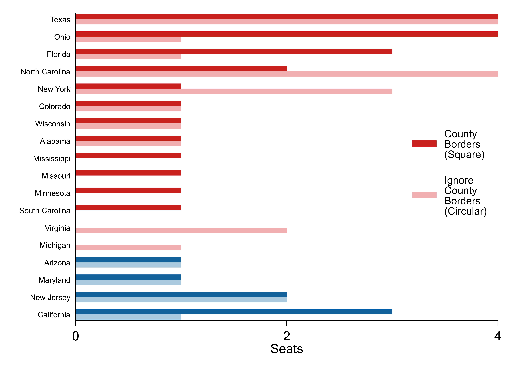
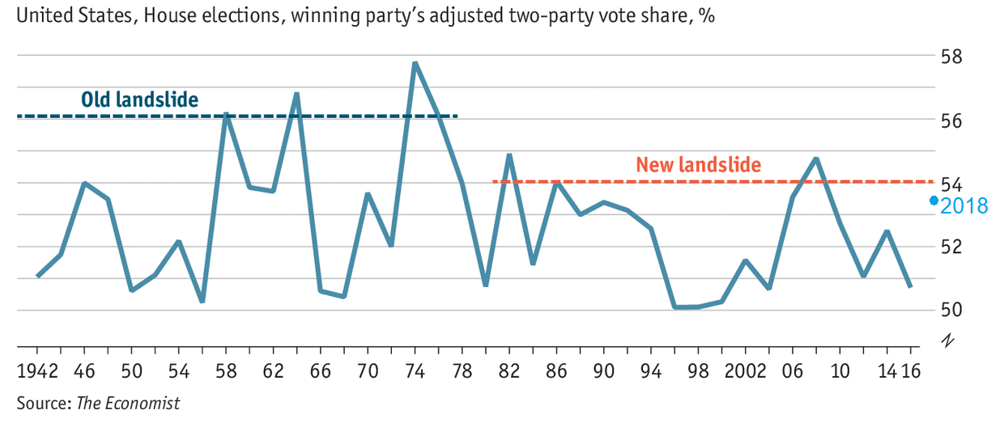

After the 2012 elections, Democrats were outraged by the gerrymandered congressional map -- and with good reason. They had won the national popular vote by 2.5 million votes (once you account for uncontested races), but lost the house 234-201.
In the wake of the 2018 midterms, there hasn’t been as much outrage because Democrats managed to win the House despite the map. Some on the right have gone so far as to say that the congressional map was in fact fair this election, because Democrats’ share of seats approximately equaled their share of votes.
This argument is deeply misleading.
The congressional map remains plenty biased against Democrats. In 2018, the party won 235 seats with a 6.7% margin in the popular vote (more on how I arrive at 6.7% later). Republicans could have won 235 seats with a popular vote margin of just 1.1%.
The following graphs show how the 2018 election would have gone under various popular vote scenarios. To model a popular vote tie (0% margin), for example, I applied a uniform swing that shifted each district to Republicans by 6.7%. There were 204 districts that voted for Democrats by more than 6.7%, and Democrats would have held those under a popular vote tie. The other 231 would have gone to Republicans.
The S-shape is from the winner-take-all districts. Because we have winner-take-all districts, a slight edge in the national vote total can translate into a big edge in seats—the winning party wins a lot of close elections. But winner-take-all doesn’t have to be unfair to one side or the other. In the graph above, if the parties’ lines were on top of each other, it would mean that each party wins the same number of seats at each percentage of the national vote.
The gap between the lines is the distortion attributable to the map.
Democratic voters are packed into heavily Democratic districts, so they’re guaranteed a larger base. If Republicans won overwhelmingly, winning the national popular vote 75%-25%, they’d still lose 34 seats. Those 34 seats are Democrats’ base. The 34 districts are in cities, including 9 in New York City alone, and 31 of the 34 are majority minority. On the other hand, if Democrats won 75-25, they’d win all but 12 seats. Democrats would sweep Louisiana, for example, where there are 5 districts that are currently 70% Republican. So Republicans’ base of guaranteed seats is smaller.
But it doesn’t help to have more seats you’re guaranteed to win; the goal is to win a majority. Running up big margins in your strongest districts doesn’t help. And because Democrats are packed in their blue islands, swing districts are more conservative than the nation as a whole.
For the foreseeable future, no party is going to win by more than 20%. So let’s zoom in on the above graph, showing only elections that are 60-40 or closer.
We would have had a repeat of 2012 if Democrats had again won by 2%: Democrats need to win by 2.7% (i.e. win 51.4-48.6) to get the necessary 218 seats for a majority. Republicans can get there if they lose the popular vote by 2.7% or less.
I modeled a typical election based off of the results of this election and the fifteen before it. In the typical election held with this map and these voting patterns, Republicans would need 2.6 percentage points fewer votes to get the same number of seats. So 2.6% of the electorate votes for Democrats, only to have their votes cancelled out by the map.
I’d call those wasted votes. Suppose Democrats win the popular vote 51-49. After that’s filtered by the map, it’s as if they lost 48.4-49, and 2.6% of votes were thrown away. They narrowly lose the House. That’s the distortion from the map.
Gerrymandering or Geography
So far, I haven’t said anything about whether this gap is driven by gerrymandering (Republicans drawing districts that pack Democrats together) or geography (Democrats live around other Democrats). Both of those could explain why swing districts lean Republican. To answer this question, we need to know what a non-gerrymandered map would look like. But how do you define that?
Dave Wasserman at FiveThirtyEight drew hypothetical congressional maps by following a few different rules. One rule was to make districts as compact as possible. That results in hilarious-looking circular districts. Another, more plausible, rule was to make districts as compact as possible while trying to follow county borders. Here’s Ohio as an example.
So how fair are these un-gerrymandered, compact districts?
They’re better, but they’re not fair. Democrats need to win by 1.9% to get a majority instead of 2.7%. The average gap between what Democrats need and what Republicans need -- the wasted votes -- is 1.8% instead of 2.6%. So by these criteria, about one third of the bias in the map is attributable to gerrymandering. Compact districts are an improvement, but those lines aren’t that much closer together. Two thirds of the gap is comes from how voters are distributed geographically before they are drawn into congressional districts.
Geographic context doesn’t mean Democrats are helpless. The courts could require states to draw districts to maximize partisan fairness, not to be compact. One fairer standard would be that each state’s delegation should be proportional to its vote. Another standard would be that there should be as many competitive districts as possible. FiveThirtyEight also drew congressional maps following each of those standards.
These look a lot fairer (slightly favorable to Democrats in spots, thanks to FiveThirtyEight’s drawing). Courts have emphasized compactness when ruling on redistricting cases. But they could shift, and focus on partisan fairness. Democrats could gain some ground if they just fight for compactness, but unless they fight for partisan fairness, the map will still be biased against them.
There are also some more radical options for Democrats. If the Uniform Congressional Districts Act were repealed, states could shift to multi-member districts (which existed in the early 1800’s), or other voting systems entirely, like mixed-member proportional. So I don’t think we should take it as a fait accompli that the congressional map will hurt Democrats just because they’re clustered in cities.
Nonetheless, when people talk about gerrymandering, they tend to mean splitting counties and drawing crazy lines for partisan gain. No one would look at those compact maps of Ohio I showed and say: “those look really gerrymandered” even if they do, in fact, pack Democrats together. So while compactness doesn’t produce fairness, it is the norm.
To measure gerrymandering, then, I’ll compare each state’s current map to the compact maps. I’d call this partisan gerrymandering, as opposed to geographic bias. Democrats won 235 seats under the current map, but win 249 under the compact map. Here’s which states are responsible.

Anecdotally, Texas, Ohio, Florida, and North Carolina are known to be the worst offenders, so it makes sense to see them at the top of this list. On the other side, California’s districts were drawn by an independent redistricting commission. But the commission drew competitive districts, and in the ensuing wave, Democrats swept them.
Below are the results for the six different maps that FiveThirtyEight drew.
You can see that the map with round compact districts and the map with county-based compact districts produce almost identical results. Even though they look very different, they both say that gerrymandering is responsible for a third of the gap between the parties. And both compact maps say that Democrats are hurt most in landslide elections like this one. That could suggest that gerrymandering protects Republican incumbents more than it adds new Republican seats.
Getting the Right Total for the Popular Vote
So, about that 6.7% figure for the popular vote. Democrats won 53.4% of the vote, while Republicans won 44.8%. That’s an 8.6% margin of victory. But there were 41 uncontested races, and 38 of those were Democrats without a Republican challenger. Instead of giving the winner 100% of the vote in those districts, I filled in those results by assuming they swung the same amount from 2016 as contested districts (actually the same amount after a log odds transformation, which is how I dealt with all the popular vote swings). That yields 6.7%: the popular vote margin we’d expect Democrats to have won by had every race been contested.
Now some people have been comparing the 8.6% raw, unadjusted margin of victory against Republicans’ 2010 margin of 6.8%, or their 1994 margin of...also 6.8%. Was Democrats’ 2018 wave actually smaller than those Republican waves? No, because in 1994 and 2010, 30 and 24 Republicans ran unopposed (compared to 14 and 5 Democrats -- sensing a pattern?) The Economist made an effort to correct for this, and while I don’t know their method, they got adjusted margins of about 5% in hypothetical elections where no one ran unopposed in each of those Republican wave years. Here’s their graphic, with my estimated margin of 6.7% for 2018 added.

In the 2016 Presidential and the 2012 House elections, Democrats won the popular vote by 2% and lost the election. Republicans won 7 more seats in 2010 than Democrats won this year, despite a smaller popular vote margin. The bias in the system is here to stay. So tune out anyone who says Democrats’ victory wasn’t convincing -- no one said that in 2010.